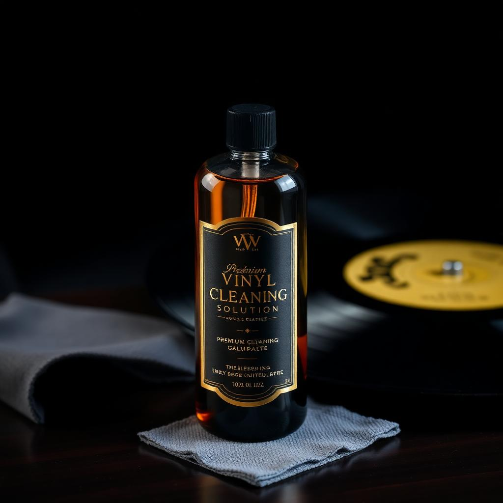

N°01
Líquido enzimático
Solução de Limpeza Premium
Fórmula desenvolvida especificamente para remover sujeira, óleos e estática dos sulcos sem agredir o material.
- Não deixa resíduo
- Restaura brilho dos grooves
- Frasco 250ml
Para discos com acúmulo de poeira ou recém-adquiridos em sebos.
Falar no WhatsApp→